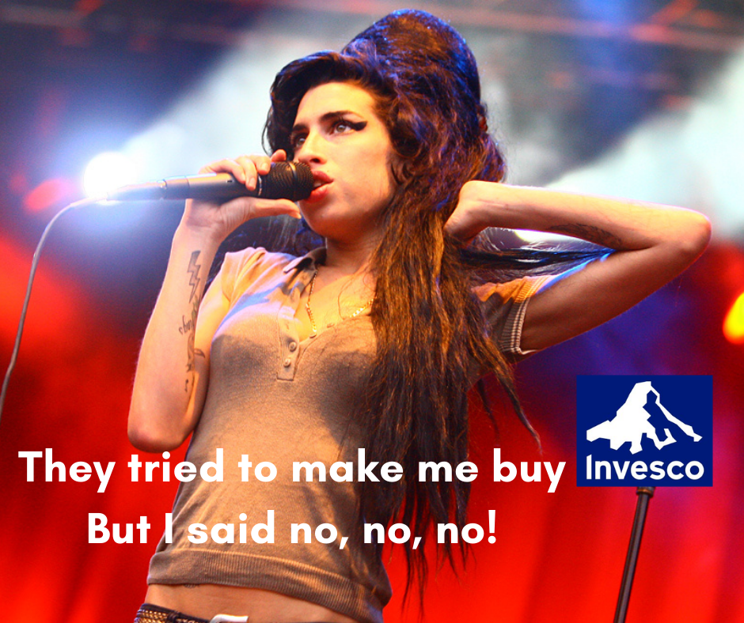

פורסם בתאריך 14.4.2022
התכנים בפוסט זה, כמו כל שאר התכנים בבלוג, הינם תכנים לימודיים במהותם, הם אינם מהווים ייעוץ או המלצה לביצוע פעולה בנייר ערך, ואין לראות בהם תחליף לייעוץ השקעות ו/או ייעוץ פנסיוני המתחשב בצרכיו הייחודיים של כל אדם.
לא מזמן החלו להיסחר בארץ קרנות סל איריות של Invesco ומשקיעים פאסיביים רבים מגלים התלהבות מאותן קרנות. בפוסט הזה אסביר מדוע אני פחות מתלהב מהקרנות של Invesco, וכלל לא מתכנן להשקיע בהן.

Image by NRK P3 via Flickr
ל-Invesco יש 9 קרנות סל 🧺 איריות שרשומות למסחר בישראל, ונסחרות במקביל בבורסות נוספות כמו לונדון, גרמניה, אמסטרדם, איטליה ושוויץ. בפרט, מבין הקרנות שנסחרות בארץ בשקלים ישנן קרנות העוקבות אחרי המדדים S&P 500, Europe STOXX 600, MSCI Emerging Markets, שמהוות חלופה לקרנות המקבילות של iShares מבית בלאקרוק, שגם נסחרות בארץ בשקלים ועוקבות אחרי מדדים זהים/דומים*. פירוט נרחב על הקרנות של בלאקרוק שנסחרות בארץ בשקלים, וקרנות איריות נוספות ניתן למצוא כאן.
* הקרן של iShares שעוקבת אחרי מדד MSCI Europe כוללת כ-400 מניות גדולות-בינוניות מהמדינות המפותחות באירופה, ואילו הקרן של Invesco כוללת כ-600 מניות גדולות, בינוניות וקטנות מאותן מדינות. כלומר ההבדל בין הקרנות הוא בתוספת של 200 מניות קטנות, שמשקלן במדד לא גבוה במיוחד (כ-15%). באופן דומה, אבל הפוך, הקרן של iShares שעוקבת אחרי השווקים המתפתחים עוקבת אחרי מדד MSCI Emerging Markets IMI שכולל מניות מכל הגדלים, בעוד הקרן של Invesco עוקבת אחרי מדד MSCI Emerging Markets שכולל רק מניות גדולות-בינוניות.
דמי הניהול של הקרנות של iShares ו-Invesco דומים, ובשני הגופים הקרנות משקיעות מחדש את הדיבידנדים. למרות הדמיון, הקרנות של Invesco עוקפות בכ-0.3% בממוצע לשנה את התשואות של הקרנות של iShares וקרנות איריות אחרות, וזו הסיבה להתלהבות המשקיעים 🤩. אז האם יש כאן תשואה עודפת "בחינם"? לא בדיוק.
אופן העקיבה אחרי המדדים והיתרון המיסויי של Invesco
כפי שהזכרנו בעבר, מדד הוא משהו תיאורטי שהוגדר ע"י חברת מדדים (למשל חברות כמו S&P, MSCI, FTSE ואחרות). המדד מגדיר גם את הרכב החברות שכלולות בו וגם את המשקל שכל חברה תופסת בו. מדדים מתעדכנים לרוב אחת לרבעון, ובמסגרת העדכון לעיתים יש מניות שנפלטות מהמדד ואחרות שנכנסות אליו.
הקרנות של iShares עוקבות אחרי המדדים באמצעות עקיבה פיסית, כלומר אחזקה ישירה של המניות במדד, מתוך מטרה להיות קרובים ככל האפשר למשקל של כל מניה במדד, כלומר להגיע לטעות עקיבה קטנה ככל האפשר אחרי המדד. לכל קרן סל יש טעות עקיבה אחרי מדד הייחוס שלה, שנובע מהקצאת משקל מעט גבוה יותר למניות מסוימות ביחס למשקלן במדד, ומשקל מעט נמוך יותר ביחס למשקלן במדד למניות אחרות. חשוב להדגיש שטעות העקיבה היא לאו דווקא לרעת המשקיעים, היא יכולה להיות גם לטובתם. בכל מקרה, הרוב המוחלט של הקרנות מציגות טעויות עקיבה נמוכות מאוד ביחס למדד שאחריהן הן עוקבות. זה נכון גם לקרנות שלא מבצעות עקיבה מושלמת אלא עקיבה מדגמית (sampled), הכוללת מדגם מייצג מתוך המניות במדד.
הקרנות של Invesco לעומת זאת מחזיקות בחלקן מניות במדד, ובחלק אחר מחזיקות בחוזי Swap (חוזי החלף). בחוזים אלה מתקשרת החברה המנהלת את הקרן עם מוסד פיננסי בחוזה, שמגדיר שהקרן מעבירה כספים לאותו מוסד פיננסי, והוא בתמורה מחוייב לשלם לקרן את תשואת המדד על הכסף בטווח תאריכים מסוים, מינוס ריבית שגובה המוסד הפיננסי. מדובר בעצם על סוג מסוים של עקיבה סינטטית אחרי המדד, בניגוד לעקיבה פיסית. באופן עקיבה זה טמון יתרון מיסויי, כתוצאה מחיסכון במיסוי על דיבידנדים, עליו נרחיב מיד.
מיסוי בקרנות סל
כפי שכתבנו בהרחבה בכתבה על קרנות איריות, ישנם הבדלים במיסוי על דיבידנדים בין קרנות סל של מנפיקים ישראלים, קרנות סל איריות המחזיקות פיסית את המניות במדד (כמו מרבית הקרנות האיריות, ובפרט אלה של בלאקרוק, ואנגארד, ספיידר ואחרים), וקרנות סל אמריקאיות. הנה תזכורת קצרה להבדלים:
• קרנות ישראליות (קרנות סל, אבל גם קרנות השתלמות, קרנות פנסיה וקופות גמל) עוקבות אחרי מדדי חו"ל באמצעות חוזים עתידיים על המדדים. החוזים העתידיים נסחרים בבורסת החוזים, והחוזה 📄 בעצם מגדיר שהרוכש זכאי לקבל מהמוכר את תשואת המדד בטווח תאריכים מסוים. הקרנות הישראליות מגדירות כי הן עוקבות אחרי גרסת ה-NTR של המדד (Net Total Return), כלומר תשואת המדד הכוללת (עליית ערך + דיבידנדים) בניכוי המיסוי על דיבידנדים, שמוגדר עבור מי שאינם אזרחים אמריקאים על 30%, וגם התשואות בפועל של הקרנות הישראליות מתכנסות לתשואת ה-NTR של המדד אחריו הן עוקבות. כהערת אגב נזכיר שדמי הניהול של הקרנות הישראליות גבוהים מאלה של הקרנות האיריות והאמריקאיות, וגם אם מוצאים קרן ישראלית בדמי ניהול נמוכים, הפרקטיקה המקובלת (והדי מגעילה) היא שתוך שנה-שנתיים הקרן מעלה את דמי הניהול שלה.
• קרנות אמריקאיות מחוייבות לחלק את הדיבידנדים שלהן, כך שבעת החלוקה הדיבידנדים ממוסים ב-25%, לפי אמנת המס בין ישראל לארה"ב. בנוסף הן גם חשופות למס עיזבון דרקוני, אבל זה עניין נפרד.
• קרנות איריות שמחזיקות פיסית את המניות ממוסות על הדיבידנדים לפי אמנת המס המקלה של אירלנד עם ארה"ב ועם מדינות נוספות: 15% מס בלבד על דיבידנדים של מניות אמריקאיות וכ-8% בממוצע בשאר העולם. השקעה במדד עולמי, או במס' קרנות שמייצרות חשיפה גלובלית, מביאים למיסוי ממוצע של כמחצית משיעור המס הרגיל על דיבידנדים (כ-12.5% לעומת 25%).
מה שמיוחד בקרנות של Invesco הוא שהן מנצלות תקנה מסוימת של ה-IRS האמריקאי, תקנה 871(m), שמגדירה שקרנות שמשקיעות באמצעות חוזי Swap לא ממוסות על הדיבידנדים שהן מקבלות, כלומר יש כאן סוג של פרצת מס. החיסכון הזה במיסוי (מינוס הריביות על חוזי ה-swap), הוא זה שמייצר את התשואה העודפת של הקרנות של Invesco.
הבעיה המרכזית בחוזי Swap
הבעיה המרכזית בחוזי Swap היא סיכון המנפיק. מה הכוונה? הצד השני של החוזה יכול פשוט לא לעמוד בהתחייבות החוזית שלו. זה יכול לקרות למשל אם אותו מוסד פיננסי פושט רגל או נקלע לקשיים כלכליים. הנה מה ש-Invesco מציינים בעצמם בעמוד של קרן ה-S&P 500 שלהם:
The Fund is exposed to the risk of bankruptcy, or any other type of default of the counterparty related to any trading transaction entered into by the Fund. In order to reach its investment objective, the Fund enters into swap agreements which provide the performance of the Reference Index, and may imply a range of risks which could lead to an adjustment or even the early termination of the swap agreement
הסבירות לתרחיש של פשיטת רגל של מוסד פיננסי היא נמוכה, אבל בהחלט אפשרית. רבים בוודאי זוכרים את פשיטת הרגל של ליהמן-ברדרס כתוצאה ממשבר הסאב-פריים ב-2008, שהובילה לקריסה של השווקים. ליהמן-ברדרס היה בנק אמריקאי גדול ומוכר, בן יותר ממאה שנה, שנחשב ע"י רבים כ-too big to fall, אבל פשט רגל בכל זאת. יחד איתו פשטו רגל לא מעט בנקים נוספים וקטנים יותר, בעוד שאחרים חולצו ע"י הממשל.
חשוב להבין לעומק את המשמעות של סיכון מנפיק – אם וכאשר הסיכון מתממש, הקרן מפסידה כסף ללא קשר לביצועי המדד❗ במילים אחרות, ביצועי הקרן תלויים באופן מוחלט בעמידה בחוזים של המוסדות הפיננסיים עימם היא מתקשרת.
הסיכון בחוזי Swap הוא גבוה יותר מעקיבה סיננטית באמצעות חוזים עתידיים, שמקובלת בקרנות הישראליות. כאשר קרן ישראלית רוכשת חוזה עתידי על מדד מסוים דרך בורסת החוזים, בורסת החוזים דורשת מהצד השני לחוזה לרתק בטחונות במזומן ו/או שווי מזומן (כמו פיקדונות ואג"חים קצרי טווח), ומטפלת בעצמה בסליקה, כך שניתן להיות שקטים בנוגע לעמידה בחוזה. בנוסף, חוזים עתידיים על מדדים הם המוצר הסחיר בעולם, כך שתמיד ניתן למכור ולגלגל חוזים הלאה בקלות. חוזה Swap לעומת זאת הוא חוזה פרטני בין שני צדדים, ללא גוף מרכזי מפקח וסולק כמו בורסת החוזים. כדי לדרוש קיום חוזה שהופר יש לפנות לבית משפט 👩🏻⚖️.
בהקשר הזה, ניתן אף לומר שעקיבה אחרי מדד באמצעות חוזה Swap אפילו סותרת את מהות ההשקעה הפאסיבית. הפיזור הרחב 🌎 של השקעה פאסיבית מנטרל את הסיכון הפרטני של כל מניה בודדת במדד. אבל כשמשקיעים באמצעות חוזה Swap, הסיכון הפרטני של הצד השני לחוזה, מחזיר את הסיכון הזה בחזרה. כלומר אנחנו אמנם משקיעים במדד רחב, אבל עדיין תלויים בחסדיהם ובביצועיהם של כמה מוסדות פיננסיים 🏦 ספציפיים.
בעיות נוספות בחוזי Swap
• הצד השני לחוזה לא חייב לפשוט רגל כדי שהחוזה לא יקוים. מספיק שייקלע לקשיים כלכליים או שיספוג פגיעה זמנית בנזילות 💦 כדי שלא יעמוד בהתחייבות שלו, באופן זמני או קבוע.
• גם איחור בתשלום ⏰ הוא בעייתי: בזמן הזה הכסף אינו מושקע ואינו צובר תשואה.
• חוסר תאימות לשווי ההוגן: נניח ונודע שיש איחור בתשלום של מוסד פיננסי מסוים לקרן, והקרן השקיעה רק 10% מההון שלה בחוזה Swap מול אותו מוסד פיננסי. המידע הזה הופך מהר לפומבי, והקרן גם חייבת לדווח על כך. במקרה כזה השווי ההוגן של הקרן צריך להיות עד 10% מתחת לשווי המדד, אבל האם זה מה שיקרה בפועל? כנראה שלא. ברגע שהמשקיעים מבינים שיש בעיה נוצרת בהלת מכירות, ובסבירות גבוהה מחיר הקרן יירד יותר 📉 מאשר ההשפעה האמיתית של אותו חוזה Swap על נכסי הקרן.
• השפעה עקיפה: יתר על כן, עצם הפרסום יכול להזיק לקרנות אחרות של Invesco שכלל לא משקיעות באותו מדד ולא מסתמכות על אותו מוסד פיננסי. למשל אם יש מוסד פיננסי אירופאי שלא עומד בחוזה ה-Swap שלו מול Invesco עבור מדד Europe STOXX 600, ברגע שהמשקיעים שומעים שיש בעיות עם קרן של Invesco, ואולי בעקבות זאת מגלים לראשונה על עצם העקיבה הסינטטית, תיתכן בהלת מכירות גם בקרנות אחרות של Invesco.
• השפעה על הסחירות: אחרי שמתפרסמות ידיעות מסוג זה, הסחירות של הקרנות יכולה לרדת משמעותית, מה שגם יקשה על מכירה שלהן בשווי ההוגן.
• לפי מסמך של דלויט, הממשל רוצה לסגור את הפרצה המיסויית של תקנה 871(m).
• עליית הריבית: בחוזה Swap המוסד הפיננסי גובה ריבית. כאשר הריבית עולה היא עשויה לעלות לרף מסוים שבו היא תהיה גבוהה מהחיסכון במיסוי על הדיבידנדים.
• חוסר שקיפות: בחוזה Swap רב הנסתר על הגלוי. מה יוצא לצד השני של החוזה? הרי אם הצד השני של החוזה יקנה את המניות במדד הוא ימוסה עליהן, אפילו אם בשיעור מופחת, אבל עדיין יצטרך להחזיר סכום כספי ששקול לתשואת ה-Total return המלאה, ללא המיסוי על הדיבידנדים. אז מאיפה הצד השני של החוזה מרוויח? ייתכן והוא כלל לא רוכש את המניות במדד אלא מנצל את הכסף מ-Invesco להשקעה אחרת שהוא חושב שתהיה רווחית יותר? ומה אם זה לא יקרה וההשקעה שלו תיכשל? עצם העסקה מעלה לא מעט שאלות מטרידות, שלפחות לי לא ברורה התשובה אליהן.
ניתוח סיכונים
אחת הבעיות המרכזיות שאני רואה פעם אחרי פעם אצל משקיעים היא הסתכלות רק על צד אחד של המטבע, צד התשואות, והתעלמות ו/או חוסר הבנה של הסיכונים ⚡, וזה נכון גם למקרה הזה.
עד כה חידדנו לגבי צד הסיכון. ראינו שפשיטת רגל של מוסד פיננסי היא אמנם תרחיש נדיר אבל בהחלט אפשרי, וכן יכולה להיות פגיעה בהשקעה שלנו גם אם אותו מוסד לא פושט רגל, אלא רק נקלע לקשיים כלכליים/תזרימיים, או שסתם עולות ידיעות על בעיות בקרנות של Invesco.
עכשיו בואו נבחן את צד התשואה באמצעות דוגמא מספרית.
דנה משקיעה 2,000 ₪ בחודש בקרן של Invesco במשך 20 שנה, והקרן משיגה תשואה שנתית של 9%. לאורך השנים הכל עבד כשורה, לא היה סיכון מנפיק, ובתום התקופה יהיו לדנה 1.335 מיליון ₪.
קארין משקיעה 2,000 ₪ בחודש בקרן מקבילה של iShares במשך 20 שנה, והקרן משיגה תשואה שנתית של 8.7%, כלומר 0.3% פחות מהקרן של Invesco. בתום התקופה יהיו לקרן 1.286 מיליון ₪.
הפרש התשואה המצטבר עומד על פחות מ-4% לטובת דנה, וזה בהנחה ולא התממש שום סיכון 💣, פרצת המס לא נסגרה בדרך, ועליית הריבית לא שינתה את המאזן ⚖️. האם ההפרש הקטן הזה שווה את הסיכון הנוסף? אני חושב שלא, ולטעמי המתאם בין תשואה לסיכון בקרנות של Invesco הוא בעייתי. אבל שכל אחד יעשה את השיקול שלו.
כדאי לציין שישנן דרכים יותר מושכלות, שמבוססות על נתונים סטטיסטיים, להגדיל את הסיכון ובכך את התשואה הצפויה. למשל, להיות מודעים לכך שיש עוד מניות מחוץ ל-S&P 500, ובפרט מניות קטנות יותר. השקעה של פלח מסוים מהתיק במדדי מניות קטנות ובמיוחד במדדי מניות ערך קטנות, צפויה להשיג תשואה עודפת של כ-2% ואף יותר בממוצע לשנה. למשל, בין 2000-2021 מדד MSCI USA Small Cap Value הניב תשואה כוללת של 754%, המהווה 10.24% בממוצע לשנה, בעוד שה-S&P 500 הניב תשואה כוללת של 383% באותה תקופה, המהווה 7.42% בממוצע לשנה, כלומר פער של כ-3% בממוצע לשנה, בהשקעה בפיזור רחב ובלי שום סיכון מנפיק.
סיכום
כתפיסת עולם, אני דוגל בפשטות ושקיפות, ואני מאמין שבמרבית המקרים הפתרון הפשוט יותר הוא גם היעיל והמוצלח יותר. לכן בהשקעות במדדים אני מעדיף אחזקה פיסית, בלי תחכומים למיניהם, בדמי ניהול נמוכים, ועם מיסוי מופחת על דיבידנדים. את זה נוכל לקבל מקרנות איריות של בלאקרוק, ואנגארד, ספיידר וגופים אחרים, בין אם הן נסחרות בארץ ובין אם לאו. זה לא אומר שהקרנות של Invesco, או של מנפיקים ישראלים, הן קרנות גרועות. אבל בעיניי תוספת תשואה קלה לא שווה את תוספת הסיכונים הפרטניים וחוסר השקיפות.
מסיבות דומות דרך אגב אני פחות מחבב את המסלולים מחקי מדד המובנים בקרנות ההשתלמות, קרנות הפנסיה וקופות הגמל. הקרנות האלה נחשפות למדדים באופן סינטטי ולא שקוף, מחזיקות יתרות מוגזמות של מזומנים שפשוט לא מושקעים, ובחלקן אופן קביעת החלוקה בין מדדים משתנה משנה לשנה, כך שמדובר בהשקעה פאסיבית שהיא חצי אקטיבית. בעיניי המסלולים מחקי מדד המובנים הם בסדר אבל הם רק ה-second best, כאשר האפשרות המוצלחת ביותר היא השקעה בניהול אישי (IRA), בה ניתן להשקיע ביעילות את כל הכסף בקרנות איריות.
רוצה לשאול שאלות ולהשתתף בדיון? את/ה מוזמן/ת לפוסט בעמוד הפייסבוק שלנו.
רוצה לקבל סוף כל סוף את כל הכלים והידע הפרקטי כדי להשקיע בקלות וביעילות את כספיך וחסכונותיך? לחץ/י כאן כדי לראות את שירותי ההדרכה והסיוע במימוש השקעות פאסיביות שאנחנו מציעים.